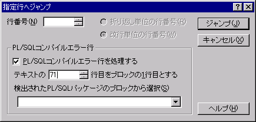

[
目次
]
指定行へジャンプ
行番号を指定するとその行へカーソルを移動させることができます。
(行番号)
カーソルを移動したい行番号を指定して下さい。
○折り返し単位の行番号
入力した行番号が、折り返し単位の行番号として扱われます。
○改行単位の行番号
入力した行番号が、改行単位単位の行番号として扱われます。
「PL/SQLコンパイルエラー行」
この機能は、OracleのPL/SQLパッケージのソースをSQL*Plusでコンパイルしたり、実行時エラー情報を見たリする場合に使用します。
コンパイルエラーや実行時エラーが発生した場合に出力されるエラーメッセージを見ると、エラー行番号とソース中の実際の行番号が違いますが、この機能で自動的にエラー行番号から実際の行を算出するので、ソース中の適切な位置へジャンプできます。
エラー情報が実際のソースの行番号と異なるので、この機能がないとPL/SQLプログラマは仕事になりません(1998年当時)。
[注意]
・ジャンプ先の行番号は、改行単位の行番号とみなします。
・「ブロックの1行目」や、検出されたブロックの行番号は、現在のタイプ別設定における行番号表示の設定（折り返し単位の行番号か改行単位の行番号）に合わせます。
・
タイプ別設定 『スクリーン』プロパティ
のアウトライン解析方法がPL/SQLに設定されている場合、パッケージ仕様部とパッケージ本体部を自動的に検出します。
・エラー行番号から実際の行を算出する機能は、Oracle7とSQL*Plusの組み合わせでしか動作確認をしていません。

タイプ別設定 『スクリーン』プロパティ
のアウトライン解析方法がPL/SQLに設定されている場合、パッケージ仕様部とパッケージ本体部を自動的に検出します。
■
マクロ構文
・構文: Jump( int1 :Integer, int2 :Integer );
int1 ジャンプ先行番号
int2 オプション（省略可能、ただしPPAマクロは省略不可）
・記録: ○
・解説
オプションには以下の値の組み合わせを指定できます。
0x00 折り返し単位の行番号
0x01 改行単位の行番号（省略時規定値）
0x02 PL/SQLコンパイルエラー行を処理する
MoveCursor / MoveCursorLayout
もあります。
注意
キーマクロ中では 10進数の定数表記しか受け付けません。
オプションは10進数に直して記述してください。
注意
指定行へジャンプのダイアログをマクロで出すことはできません。
 [注意]
[注意]